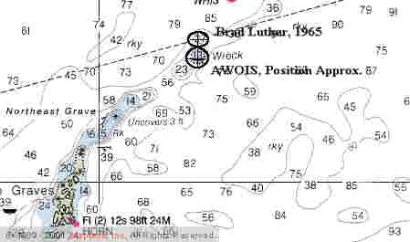

Link Index
MWDC
Home Page
Shipwrecks Page
Albert Galatin
Alice M. Colburn
Alice M. Lawrence
Ardandhu
Barge and Crane
California
Charles S. Haight
Chelsea
Chester Poling
City of Salisbury
Corvan
Dixie Sword
Edward Rich
French Van Gilder
Henry Endicott
Herbert
Herman Winter
Hilda Garston
HMCS St. Francis
James Longstreet
John Dwight
Kershaw
Kiowa
Lackawanna
Lunet
Mars
Pemberton
Pendleton
Pinthis
Port Hunter
Pottstown
Romance
Seaconnet
Trojan
USS Grouse
USS New Hampshire
USS Triana
USS Yankee
USS YSD
Vineyard Sound
Lightship
|
Description: Freighter; Steel
Dimensions: length - 415 ft. width - 54 ft. depth - 30.3 ft.
Tonnage: gross - 5924, other -
Propulsion: Steam; Single propeller
Machinery: (1) Triple expansion steam engine with cylinder diameters 24.25", 42.5", 74" and stroke of 51", 750 Nominal horsepower; Electric turbine; 3 Single ended steel boilers, 12 Corrugated furnaces
Cargo: Tropical Animals; 8000 tons of Jute, Natural Rubber, Iron, Tea, Sugar, Rice, Bolts of Silk, Tapestries
The Shipwreck
Date Sunk: April 22, 1938
Cause: Stranded
Location: Boston Harbor, Graves Ledge
Coordinates: Latitude, 42o - 22' - 26"N Longitude,70o - 51' - 35"W
Loran: 13974.4 and 44283.3
The weather was clear, Saturday, April 23rd, as Boston Pilot, Captain William H. Lewis guided the City of Salisbury toward the outer harbor. Bound for New York with a cargo estimated at nearly $2,000,000 the steamer was nearing completion of a 10,000-mile odyssey, which included stops in Calcutta, India, Ceylon, the Malay States, Halifax, Nova Scotia and now Boston. It had been a hard passage. Before leaving Calcutta a Himalayan bear had escaped. Later at sea a king cobra cannibalized its mate and at Halifax twenty-five monkeys escaped. What else could go wrong?
As Captain Lewis made his approach to Boston Harbor a thick fog bank engulfed the vessel. Although navigating in limited visibility was no simple matter then, or now, Lewis was confident of his position. Northeast of Graves Ledge Light, his Government charts showed plenty of water. Not long thereafter the steamer lurched to a halt.
The vessel had impaled itself on an uncharted pinnacle of rock, near the outer edge of Graves Ledge. Later the Coast Guard would clear Captain Lewis of any wrong doing, finding that Government Chart #246 was incorrect. The chart showed 33 feet of water, over which the steamer should have easily passed.
The freighter was in an awkward position. The pinnacle, over which the bow and stern hung, supported the ships midship section. Designed to be completely supported by water, the ebb and flow of the tide combined with a ground swell put undue stresses on the hull.
Shortly after the freighter grounded, all but a skeleton crew of 14 men and 4 officers were removed. The next day, strange noises were heard emanating from deep within the steamer's hull. Not long after noon the vessel began to strain and heave. The N.Y. Times reported: "As officers and men hurried to the afterdeck there was a crash from within the vessel, the forward portion rolled to starboard and, amid a swirl of the otherwise calm waters, disappeared from sight." The City of Salisbury had broken just forward of the stack. "The stern of the ship trembled and then rose high in the water, but settled back on the ledge." Meanwhile, the steamers crew was rescued by a nearby tug, which tempted fate, pulled up to the freighter's stern and plucked them off.
By midsummer the forward section had slipped into deep water and what remained atop the pinnacle was showing signs of stress. A crack had developed mid length of the half ship. About two weeks before the stern broke up, author Edward Rowe Snow visited the wreck and wrote. "It was a weird sensation…the grinding and gnashing of the iron rods and broken timbers far down under the water could plainly be heard, and the steamer would shudder and jerk as the ground swell passed alongside." Although the stern survived the great Hurricane of September 21, 1938, it succumbed to an October Northeaster.
Back to Top
Dive Site Conditions
Depth in feet: maximum - 90; minimum - 20
Visibility in feet: average - .
The vessels bow eventually came to rest sitting like a "dunce cap" in 80 feet of water at the base of the pinnacle. Wreckage can be found on both sides of the ledge. Today the wreck has been reduced to little more than an underwater scrap heap.
Click on the image to go to the MapTech Map Server,
for additional navigation information.

Back to Top
Historical Background
Constructed: year - 1924; where - Sunderland, England
builder - Wear Shipyard of W. Gray & Co., Ltd.
Construction details: 2 continuos steel decks; 42 ft. long Forecastle, 150 ft. Bridge Deck, 89 ft. Poop Deck; Cruiser Stern; Flat Keel; Cellular Constructed Double Bottom; 7 Bulkheads extend to the upper deck, 1 bulkhead extends to the second deck; Bulkheads Partly Cemented
Crew: 76 ; Master: Captain Oscar Harris
Owners: Ellerman Lines, Ltd. (Hall Lines, Ltd.; Managers)
Home or Hailing Port: Liverpool, England
Former Name(s), date(s):
Official number: 147264 Country: United Kingdom
Other Comments: Cargo estimates between 1.5 and 2 million dollars, the richest cargo ever shipwrecked in Boston's Outer Harbor.
Back to Top
Salvage
Most of her cargo of exotic animals were removed prior to the vessel breaking in two, including 40 pythons, 40 cobras, 300 monkeys and 20 crates of rare birds.
Shortly after the bow settled away her cargo began to float out of the hold. Prevailing currents carried it toward Nantasket Beach and the South Shore.
By August, a salvage crew from New York had removed much of what was in the after section of the ship.
According to Snow, as late as 1963 divers were still removing cargo from her broken holds.
Over the years her hull was extensively blasted and much of the steel removed for scrap.
Back to Top
Sources:
Fishable Wrecks and Rockpiles; Coleman & Soares, 1989
Lloyds Registry of Shipping; 1937-38
MapTech Mapserver
New England's Legacy of Shipwrecks; Keatts, 1988
New England Shipwrecks; Luther, 1967
New York Times; April 23 - 25, 1938
Storms and Shipwrecks of New England; Edward R. Snow, 1943
The Fisherman; January 5, 1988
True Tales of Terrible Shipwrecks; Edward R. Snow, 1963
Wrecks Below; Luther, 1958
Back to Top
These files are under construction. Any information, specifically dive site related, would be greatfully appreciated.
Send comments to: Chris Hugo
Copyright © 2000 by Christopher C. Hugo
Massachusetts Board of Underwater Archaeological Resources
All Rights Reserved
|